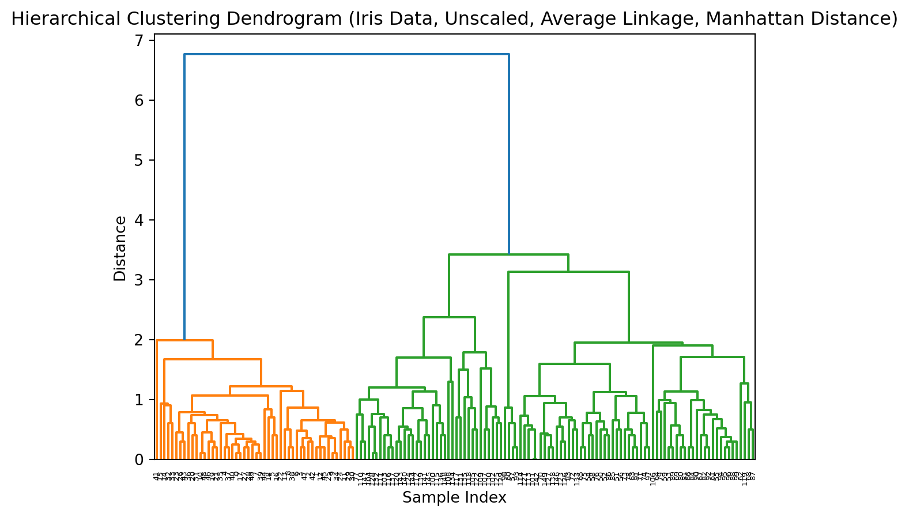
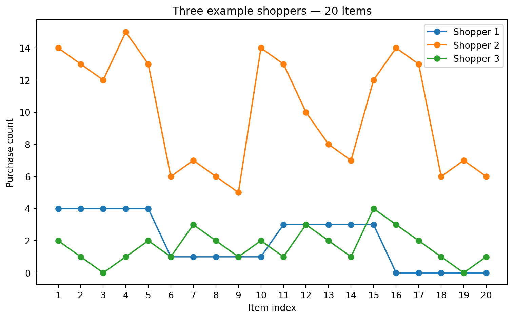

Describe and execute hierarchical clustering methods
Compute and interpret a dendrogram.
Apply various linkage criteria (single, complete, average, Ward’s, etc.) and distance metrics (Euclidean, Manhattan).
Implement and analyze K‑Means clustering
Articulate the iterative assignment–update steps and convergence conditions.
Write or follow pseudocode for K‑Means, including centroid initialization strategies.
Compute and interpret the within‑cluster variation objective.
Compare clustering techniques and select appropriately
Identify strengths and weaknesses of hierarchical vs. K‑Means approaches.
Choose between methods based on data characteristics (number of clusters, scalability, hierarchy needs).
10.1 Warm-up Puzzle
Is the picture below fake or real?
How can a computer determine if the picture below is fake or real?
Taj Mahal bathed in the Northern Lights. Generated using the DALL-E tool.
10.2 Clustering Overview
Clustering is an unsupervised learning technique used to group similar data points together. Unlike classification, there are no pre-defined labels. Instead, the algorithm tries to discover structure in the data by maximizing intra-cluster similarity and minimizing inter-cluster similarity.
Key points:
Objective: Identify natural groupings in the data.
K‑Means is a clustering algorithm that aims to partition the data into K disjoint clusters.
10.3.1 Algorithm Steps
Choose K, the number of clusters.
Initialization: Randomly select K initial centroids (or use k‑means++ for better seeding).
Assignment Step:
for each data point x_i:
assign x_i to cluster j whose centroid μ_j is nearest (minimize ||x_i - μ_j||²)
Update Step:
for each cluster j:
μ_j = (1 / |C_j|) * sum_{x_i in C_j} x_i
Convergence Check:
Stop when assignments no longer change, OR
The change in centroids is below a threshold, OR
A maximum number of iterations is reached.
10.3.2 Animation
Animation of k-means
10.3.3 Within–Cluster Variation
In \(K\)‑means clustering, we partition our \(n\) observations into \(K\) disjoint clusters \(\{C_1, C_2, \dots, C_K\}\). A “good” clustering is one for which the within‑cluster variation is minimized.
10.3.4 Elbow point
When using k‑means clustering, one of the key questions is: how many clusters (k) should I choose? The elbow method is a simple, visual way to pick a reasonable k by looking at how the “within‑cluster” variation decreases as k increases.
1. The Within‑Cluster Sum of Squares (WCSS)
For each choice of k, you run k‑means and compute the within‑cluster sum of squares (WCSS), also called inertia or distortion. This is the sum of squared Euclidean distances between each point and the centroid of its cluster:
WCSS
\(C_{i}\) is cluster i
\(mu_{i}\) is the centroid of cluster i
As k increases, WCSS will always decrease (or stay the same), because more centroids can only reduce distances.
2. Plotting WCSS versus k
Choose a range for k (e.g. 1 to 10).
For each k, fit k‑means and record WCSS(k).
PlotWCSS(k) on the y-axis against k on the x-axis.
You will get a curve that starts high at k = 1 and steadily goes down as k increases.
3. Identifying the “Elbow”
At first, adding clusters dramatically reduces WCSS, because you are splitting large, heterogeneous clusters into more homogeneous groups.
After some point, adding more clusters yields diminishing returns—each new cluster only slightly reduces WCSS.
The elbow point is the value of k at which the decrease in WCSS “bends” most sharply: like an elbow in your arm. It balances model complexity (more clusters) against improved fit (lower WCSS).
An elbow point
10.3.5 Exercise (k-means)
NOTE: The c parameter in plt.scatter() is used to specify the color of the scatter plot points.
import numpy as npimport matplotlib.pyplot as pltimport pandas as pdfrom sklearn.cluster import KMeansfrom sklearn.datasets import load_iris# Load datairis = load_iris()X = iris.data# create a data frame for easier viewingdf_iris_simple = pd.DataFrame(X, columns = iris.feature_names)df_iris_simple['species'] = iris.targetdf_iris_simple['species_name'] = df_iris_simple['species'].map( {0:'setosa', 1:'versicolor', 2:'virginica'} )# display basic informationprint(df_iris_simple.head)# scatter plotsplt.figure()plt.scatter(X[:,0], X[:,1], c = iris.target, cmap='viridis')plt.xlabel(iris.feature_names[0])plt.ylabel(iris.feature_names[1])plt.title('Sepal length vs. Sepal width')plt.colorbar(label='species')plt.show()
# Perform k means with k = 2kmeans = KMeans(n_clusters=2, random_state=2, n_init=20)kmeans.fit(X)# The cluster assignments of the observations are contained in kmeans.labels_kmeans.labels_# Plot the data, with each observation colored according to its cluster assignment.plt.figure()plt.scatter(X[:,0], X[:,1], c=kmeans.labels_)plt.title("K-means on Iris data")plt.show()
10.3.6 Exercise (Evaluate k-means clusters using the within-cluster similarity)
Find the optimal value of the number of clusters \(K\)
import numpy as npimport matplotlib.pyplot as pltfrom sklearn.cluster import KMeansfrom sklearn.datasets import load_iris# Load datairis = load_iris()X = iris.data# Plot WCSS (inertia) as a function of the number of clusterswcss = []# try a few different values of kk_range =range(1,11)for k_var in k_range:# fit kmeans kmeans = KMeans(n_clusters=k_var, random_state=2) kmeans.fit(X)# append WCSS to a list wcss.append(kmeans.inertia_)# plotplt.figure()plt.scatter( k_range , wcss )plt.xlabel('Number of clusters')plt.ylabel('Within-Cluster Sum of Squares (WCSS)')plt.title('Elbow Method For Optimal')plt.show()
10.4 Hierarchical Clustering
Hierarchical clustering builds a tree (dendrogram) of clusters using either a bottom‑up (agglomerative) or top‑down (divisive) approach.
10.4.1 Agglomerative (Bottom‑Up)
Initialization: Start with each data point as its own cluster.
Merge Steps:
Compute distance between every pair of clusters.
Merge the two closest clusters.
Update the distance matrix.
Termination: Repeat until all points are in a single cluster or a stopping criterion (e.g., desired number of clusters) is met.
10.4.2 Dendrogram
[ALL POINTS]
/ \
Cluster A Cluster B
/ \ / \
… … … …
Cutting the tree at different levels yields different numbers of clusters.
Linkage methods determine how distance between clusters is computed:
Single linkage: Minimum pairwise distance
Complete linkage: Maximum pairwise distance
Average linkage: Average pairwise distance
10.4.3 Important Concepts
Tip
Metric
The metric (or distance function or dissimilarity function) defines how you measure the distance between individual data points. Common choices include Euclidean, Manhattan (cityblock), or cosine distance. This metric determines the raw pairwise distances.
Manhattan distance
Manhattan distance. Image created using DALL-E.
Manhattan distance
Manhattan distance
Euclidean distance
How would a crow navigate in Manhattan? (I have never been to Manhattan, but the internet says there are crows in Manhattan, so it must be true).
A crow in Manhattan. Image created using DreamUp.
Euclidean distance
Linkage
The linkage method defines how to compute the distance between two clusters based on the pairwise distances of their members. Examples:
Single: the distance between the closest pair of points (one from each cluster).
Complete: the distance between the farthest pair of points.
Average: the average of all pairwise distances.
Ward: the merge that minimizes the increase in total within‑cluster variance.
Linkage function
Linkage function
Linkage Method
How It Works
Intuition
Single
Distance = minimum pairwise distance between points in the two clusters
“Friends‑of‑friends” – clusters join if any two points are close, yielding chain‑like clusters
Complete
Distance = maximum pairwise distance between points in the two clusters
“Everyone must be close” – only merge when all points are relatively near, producing compact clusters
Average (UPGMA)
Distance = average of all pairwise distances between points in the two clusters
Balances single and complete by averaging close and far pairs
Weighted (WPGMA)
Distance = average of the previous cluster’s distance to the new cluster (equal weight per cluster)
Prevents large clusters from dominating, giving equal say to each cluster
Centroid
Distance = distance between the centroids (mean vectors) of the two clusters
Merges based on “centers of mass,” but centroids can shift non‑monotonically
Median (WPGMC)
Distance = distance between the medians of the two clusters
More robust to outliers than centroid linkage, but can also invert dendrogram order
Ward’s
Merge that minimizes the increase in total within‑cluster sum of squares (variance)
Keeps clusters as tight and homogeneous as possible, often resulting in evenly sized groups
10.4.4 Single Linkage
How it works: Measures the distance between two clusters as the smallest distance between any single point in one cluster and any single point in the other.
Intuition: “Friends‑of‑friends” clustering—if any two points (one from each cluster) are close, the clusters join. Can produce long, straggly chains of points.
10.4.5 Complete Linkage
How it works: Measures the distance between two clusters as the largest distance between any point in one cluster and any point in the other.
Intuition: “Everyone must be close”—clusters merge only when all their points are relatively near each other, leading to tight, compact groups.
10.4.6 Average Linkage (UPGMA)
How it works: Takes the average of all pairwise distances between points in the two clusters.
Intuition: A middle‑ground between single and complete linkage—balances the effect of very close and very far pairs by averaging them.
10.4.7 Weighted Linkage (WPGMA)
How it works: Similar to average linkage, but treats each cluster as a single entity by averaging the distance from each original cluster to the target cluster, regardless of cluster size.
Intuition: Prevents larger clusters from dominating the average—gives each cluster equal say in how far apart they are.
10.4.8 Centroid Linkage
How it works: Computes the distance between the centroids (mean vectors) of the two clusters.
Intuition: Clusters merge based on whether their “centers of mass” are close. Can sometimes lead to non‑monotonic merges if centroids shift oddly.
10.4.9 Median Linkage (WPGMC)
How it works: Uses the median point of each cluster instead of the mean when computing distance between clusters.
Intuition: Like centroid linkage but more robust to outliers, since the median isn’t pulled by extreme values—though can also cause inversion issues.
10.4.10 Ward’s Method
How it works: At each step, merges the two clusters whose union leads to the smallest possible increase in total within‑cluster variance (sum of squared deviations).
Intuition: Always chooses the merge that keeps clusters as tight and homogeneous as possible, often yielding groups of similar size and shape.
TipConcept about distances
There is no single “best” distance metric for clustering—what works well for one dataset or problem may not work for another. The choice of distance metric (such as Euclidean, or Manhattan) depends on the nature of your data and what you want to capture about similarity.
For example, Euclidean distance works well when the scale of features is meaningful and differences are linear, while cosine distance is better for text data or situations where the direction of the data matters more than its magnitude.
It is important to experiment with different distance metrics and see which one produces clusters that make sense for your specific problem. Always check the results and, if possible, use domain knowledge to guide your choice.
10.5 Practical
n_clusters in AgglomerativeClustering specifies the number of clusters you want the algorithm to find. After building the hierarchical tree, the algorithm will cut the tree so that exactly n_clusters groups are formed. For example, n_clusters=3 will result in 3 clusters in your data.
The default value for n_clusters in AgglomerativeClustering is 2. The default value for linkage is ward. So if you do not specify these parameters, the algorithm will produce 2 clusters using Ward linkage.
from sklearn.preprocessing import StandardScalerfrom sklearn.datasets import load_irisimport pandas as pd# Load datairis = load_iris()X = iris.data# let us see what is in the datadf_iris = load_iris(as_frame=True)data_frame_iris = df_iris.frameprint(data_frame_iris)#print(df_iris.frame.head())# scale the datascaler = StandardScaler()X_scaled = scaler.fit_transform(X)
There are many ways we can perform hierarchical clustering. An alternative is to use sns.clustermap using the seaborn package (see here). The interface is similar and it can produce professional quality plots.
import seaborn as sns# Basic clustermap with scalingsns.clustermap(X, cmap='RdBu_r', z_score=0, center=0)# Different linkage methodssns.clustermap(X, method='average', z_score=0, center =0)# Different distance metrics sns.clustermap(X, metric='correlation', method='average', z_score=0, center =0)# Comprehensive examplesns.clustermap(X, method='average', metric='correlation', cmap='RdBu_r', z_score=0, center=0)# or if you prefer just the default optionssns.clustermap(X, z_score=0, center=0)
z_score=0 (Scaling Direction) - What it does: Standardizes (z-scores) the data before clustering - Options: - 0: Scale rows (genes) - each gene’s expression is standardized across samples - 1: Scale columns (samples) - each sample’s expression is standardized across genes - None: No scaling (use raw data) - Why use 0: For gene expression, you want to compare expression patterns, not absolute levels
cmap='RdBu_r' (Color Map) - What it does: Defines the color scheme for the heatmap - 'RdBu_r': Red-Blue reversed (red = high, blue = low, white = middle) - Other options: 'viridis', 'coolwarm', 'seismic', 'plasma', etc. - Why use it: Intuitive for biologists (red = high expression, blue = low expression)
center=0 (Color Center) - What it does: Centers the color map at this value - 0: White color represents zero (after scaling, this is the mean) - Other values: Could center at 1 (for fold-change), or other biologically meaningful values - Why use it: Makes it easy to see above/below average expression
Additional Common Parameters
row_cluster=True/False
What it does: Whether to cluster rows (genes)
Default: True
col_cluster=True/False
What it does: Whether to cluster columns (samples)
from sklearn.cluster import AgglomerativeClusteringfrom scipy.cluster.hierarchy import linkage, dendrogramimport matplotlib.pyplot as pltimport seaborn as snssns.clustermap(data_frame_iris, z_score=0, center=0)
10.7 Exercise (changing the linkage function)
Work in a group for this exercise
Let us try another linkage function
Change the linkage function in Z = linkage(X_scaled), method='ward')
How does the clustering change as you change this to another function?
How does this change if you do not scale the data?
NoteClick to expand
# Fit Agglomerative Clustering on unscaled data with 'average' linkageagg = AgglomerativeClustering(linkage='average')labels = agg.fit_predict(X)# Compute linkage matrix on unscaled data with 'average' linkageZ = linkage(X, method='average')# Plot dendrogramplt.figure()dendrogram(Z)plt.title('Hierarchical Clustering Dendrogram (Iris Data, Unscaled, Average Linkage)')plt.xlabel('Sample Index')plt.ylabel('Distance')plt.show()
10.8 Exercise (trying a different dissimilarity metric)
# Fit Agglomerative Clustering on unscaled data with 'average' linkage and 'manhattan' distanceagg = AgglomerativeClustering( linkage='average', metric='manhattan'# use metric instead of deprecated affinity)# Compute linkage matrix on unscaled data with 'average' linkage and 'cityblock' (manhattan) distanceZ = linkage(X, method='average', metric='cityblock')# Plot dendrogramplt.figure()dendrogram(Z)plt.title('Hierarchical Clustering Dendrogram (Iris Data, Unscaled, Average Linkage, Manhattan Distance)')plt.xlabel('Sample Index')plt.ylabel('Distance')plt.show()

10.9 Theoretical exercise: distance functions and the thin line between unsupervised and supervised machine learning
We often think the choice between supervised and unsupervised machine learning is obvious: “if you have labels, use supervised; otherwise use unsupervised”. In practice the decision can be subtle and depends on the problem framing, available data, and what constitutes a useful output.
This also impacts the choice of distance metric to use. We use whatever distance metric allows us to get the job done.
For each scenario: state your choice (supervised / unsupervised / hybrid)
Scenario 1: Discovering shopper archetypes: A marketing team wants to segment shoppers into behavioural archetypes to send them targetted ads/promotions through loyalty cards. Is this an unsupervised or supervised machine learning problem? What distance function would you use here?

Scenario 2: Detecting fraud / unusual shopping sessions: A small fraction of sessions are flagged as fraudulent (labels exist for some known fraud cases). The team wants to detect new, unseen fraud patterns.
Scenario 3: You have just started working for an exciting startup. StreamVision is a video streaming platform with 500 million subscribers worldwide. The platform hosts over 1500000 movies and TV shows across various genres. The company has noticed that users often struggle to find content they enjoy, leading to decreased engagement and higher churn rates. The content team has collected interaction data and wants to understand viewing patterns to improve the user experience.
StreamVision’s executive team has set the following objectives:
Increase user engagement: Help users discover content they’re likely to enjoy
Reduce decision fatigue: Minimize the time users spend browsing without watching
Optimize content acquisition: Understand what types of content resonate with different user segments
Personalize the experience: Create tailored homepages for different user groups
The analytics team has prepared two datasets for analysis:
Dataset 1: User Viewing History (Sample)
This dataset contains information about user interactions with content over the past 6 months. Each row represents viewing activity aggregated by user and content item.
User_ID
Content_ID
Watch_Time_Minutes
Completion_Rate
Rating_Given
Rewatch_Count
Days_Since_Release
User_Tenure_Days
U10023
C4521
127
0.98
5
0
456
892
U10023
C7834
45
0.35
NULL
0
12
892
U10023
C2109
156
1.00
5
2
1203
892
U20441
C4521
18
0.14
2
0
456
234
U20441
C8821
201
0.95
4
0
89
234
U31205
C7834
121
0.94
5
1
12
1456
U31205
C2109
162
1.00
5
0
1203
1456
U31205
C9012
89
0.88
4
0
678
1456
Field Descriptions: - User_ID: Unique identifier for each subscriber - Content_ID: Unique identifier for each movie/show - Watch_Time_Minutes: Total time user spent watching this content - Completion_Rate: Percentage of content watched (0-1 scale) - Rating_Given: Explicit rating (1-5 stars, NULL if not rated) - Rewatch_Count: Number of times user has rewatched this content - Days_Since_Release: How many days ago the content was added to platform - User_Tenure_Days: How long the user has been subscribed
Dataset 2: Content Metadata (Sample)
This dataset describes characteristics of each piece of content in the StreamVision library.
Content_ID
Title
Primary_Genre
Secondary_Genre
Runtime_Minutes
Release_Year
IMDB_Score
Language
Director_Style_Code
Lead_Actor_Popularity
C4521
Midnight Runner
Action
Thriller
132
2019
7.2
English
D_034
8.1
C7834
The Quiet Garden
Drama
Romance
128
2024
6.8
English
D_102
6.9
C2109
Starship Protocol
Sci-Fi
Action
156
2017
8.4
English
D_034
9.2
C8821
Voices Within
Documentary
Biography
212
2023
8.9
English
D_201
7.5
C9012
Summer of ’82
Comedy
Drama
101
2020
7.6
English
D_178
7.8
Field Descriptions: - Content_ID: Unique identifier matching the viewing history dataset - Title: Name of the movie/show - Primary_Genre: Main genre classification - Secondary_Genre: Additional genre classification - Runtime_Minutes: Total length of content - Release_Year: Year the content was originally released - IMDB_Score: External quality metric (1-10 scale) - Language: Primary language of the content - Director_Style_Code: Encoded style signature of the director - Lead_Actor_Popularity: Popularity metric of main actor (1-10 scale)
10.9.1 Analysis Questions
The product team has posed several questions they’d like you to explore:
User Segmentation: Are there natural groups of users with similar viewing preferences? How would you characterize these groups?
Content Discovery: How can we identify which content items are similar to each other, even if they don’t share obvious genre tags?
Cold Start Problem: For new users with limited viewing history, how might we determine which user segment they belong to based on their first few viewing choices?
Content Gaps: Are there user segments that might be underserved by the current content library?
Personalization Strategy: Given these insights, what approach would you recommend for creating personalized homepages?
10.10 Choosing Between Methods
10.10.1 Hierarchical Clustering
No need to pre-specify number of clusters (can decide by cutting dendrogram).
Produces a full hierarchy of clusters.
10.10.2 K‑Means
Requires pre-specifying \(K\).
10.11 Summary
TipKey Points
Hierarchical clustering builds a tree-like structure (dendrogram) to group similar data points
Distance Metrics How we measure similarity between points:
Euclidean distance (straight-line distance)
Manhattan distance (city-block distance)
Cosine distance (for directional data)
Linkage Methods
How we measure distance between clusters:
Single: Uses closest pair of points (can create chains)
Complete: Uses farthest pair of points (creates compact clusters)
Average: Uses average of all pairwise distances (balanced approach)
Ward’s: Minimizes increase in variance (creates similar-sized clusters)
Dendrogram
Visual representation showing how clusters merge:
Height shows distance when clusters merged
Cutting at different heights gives different numbers of clusters
Key Code Patterns:
import seaborn as snssns.clustermap(X, method='average', metric='correlation', z_score =0, center=0)